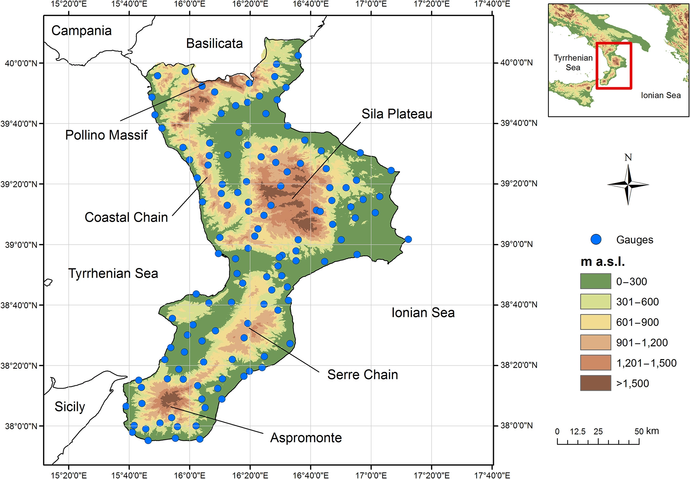
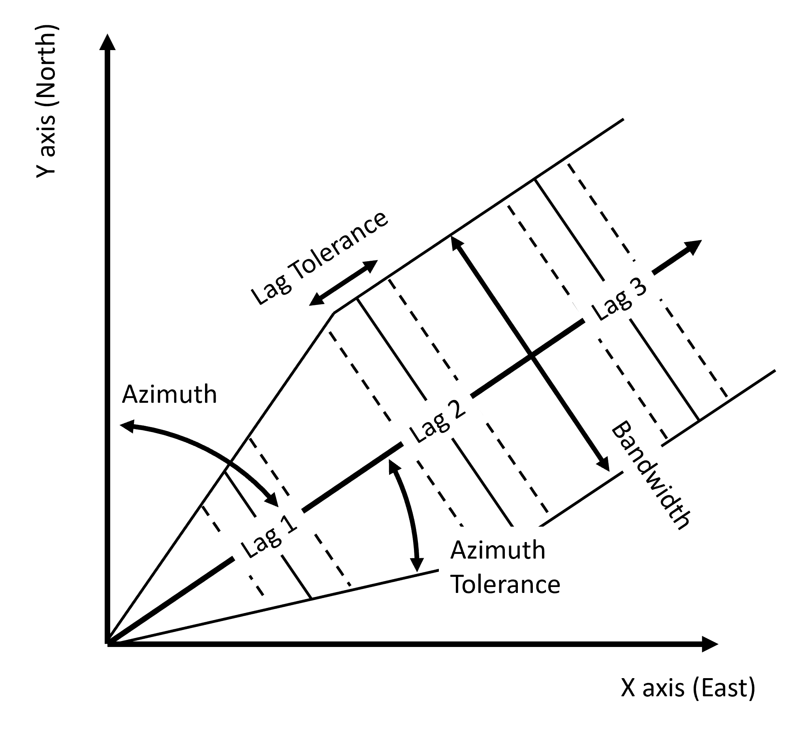
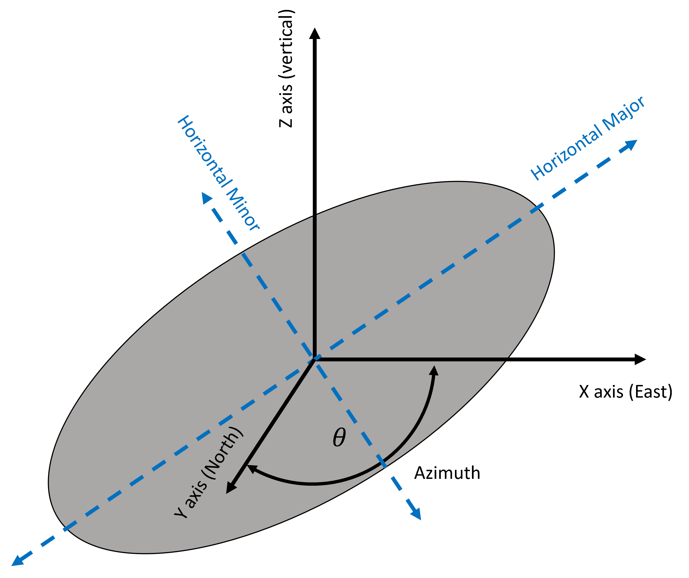
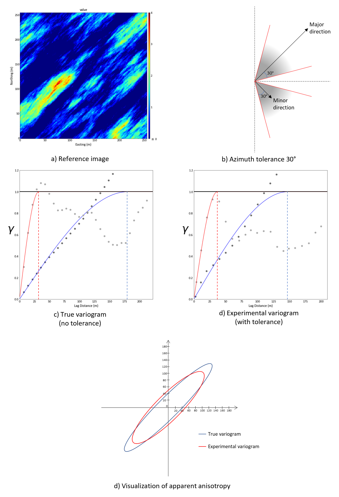
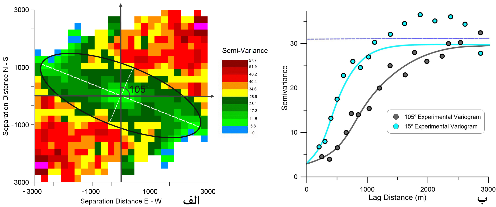
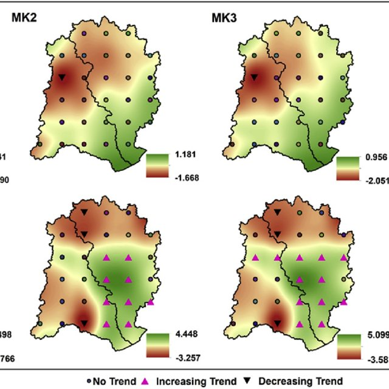

| Depth | Nporosity | |
|---|---|---|
| 0 | 0.25 | -1.37 |
| 1 | 0.50 | -2.08 |
| 2 | 0.75 | -1.67 |
| 3 | 1.00 | -1.16 |
| 4 | 1.25 | -0.24 |
| 5 | 1.50 | -0.36 |
| 6 | 1.75 | 0.44 |
| 7 | 2.00 | 0.36 |
| 8 | 2.25 | -0.02 |
| 9 | 2.50 | -0.63 |
| 10 | 2.75 | -1.26 |
| 11 | 3.00 | -1.03 |
| 12 | 3.25 | 0.88 |
| 13 | 3.50 | 1.51 |
| 14 | 3.75 | 1.37 |
| 15 | 4.00 | 0.81 |
| 16 | 4.25 | 1.21 |
| 17 | 4.50 | 0.24 |
| 18 | 4.75 | 0.99 |
| 19 | 5.00 | 0.49 |
| 20 | 5.25 | 0.34 |
| 21 | 5.50 | 0.07 |
| 22 | 5.75 | -0.26 |
| 23 | 6.00 | -0.41 |
| 24 | 6.25 | -0.14 |
| 25 | 6.50 | -1.44 |
| 26 | 6.75 | -0.75 |
| 27 | 7.00 | -0.78 |
| 28 | 7.25 | -0.85 |
| 29 | 7.50 | -0.92 |
| 30 | 7.75 | -0.66 |
| 31 | 8.00 | 0.47 |
| 32 | 8.25 | 0.85 |
| 33 | 8.50 | 0.95 |
| 34 | 8.75 | 2.35 |
| 35 | 9.00 | 0.69 |
| 36 | 9.25 | 1.31 |
| 37 | 9.50 | 0.66 |
| 38 | 9.75 | 0.72 |
| 39 | 10.00 | 0.21 |
Week 10: Variogram calculation and modelling
Variogram and h-scatter plots

source: here
Mark h-scatter plots with positive correlation, no correlation, negative correlation
Reason for variogram calculation: Kriging
Image source: Pellicone, G., Caloiero, T., Modica, G., & Guagliardi, I. (2018). Application of several spatial interpolation techniques to monthly rainfall data in the Calabria region (southern Italy). International Journal of Climatology, 38(9), 3651-3666.
Let’s go back to the Porosity example
Data:https://github.com/GeostatsGuy/GeoDataSets/blob/master/1D_Porosity.csv
variogram ploting with skgstat

Increase the number of lags

The data set includes 40 observations, consequently we can increase the number of lag classes.
To iluustrate the other parameters in the skg.Variogram
For more details
https://scikit-gstat.readthedocs.io/en/latest/reference/variogram.html
Calculating Experimental Variograms
Source: here
source: Vega, A. N. (1995). Geostatistical Analysis Applied to Mine Waste Characterization and Remediation (Doctoral dissertation, Colorado School of Mines).
In-class: search template
In-class: seach template (scan across all possible locations)
Choosing the directions (Choice of Azimuth (Directionality))
Source: here
How do we find what directions you should calculate the variogram?
Explore data
Combining knowledge of geologists
Azimuth angle in degrees clockwise from north
Source: Trevisani, S., Cavalli, M., & Marchi, L. (2009). Variogram maps from LiDAR data as fingerprints of surface morphology on scree slopes. Natural Hazards and Earth System Sciences, 9(1), 129-133.
Relationship between the variogram map and directional variograms. a) variogram 7 map of elevation data with profiles of directional variograms; b) directional variogram 8 calculated along the direction of maximum continuity, (dashed line in a); c) directional 9 variogram calculated along the direction of minimum continuity (continuous line in a)
Guidance for Paprameter Setting when Calculating Variograms
Lag separation: coincide with minimum data spacing
Lag tolerance - 1/2 lag separation distance
The variogram is only valid for a distance one-half of the field size.
Directly taken from https://www.youtube.com/playlist?list=PLG19vXLQHvSB-D4XKYieEku9GQMQyAzjJ.
Isotropic: independent of the direction of measurement ##
Source: https://geostatisticslessons.com/lessons/variogramanisotropy
In-class
Variogram calculation in major and minor directions
Python tutorials
Variogram Interpretations
Source: https://www.researchgate.net/post/How-can-I-estimate-the-major-axis-and-ratio-values-from-directional-variogram-for-modeling-anisotropy
Geometric Ansotropy
Other pattersn
Cyclic
Trend
Zonal Anisotropy
 Source:https://www.researchgate.net/publication/341763241_Spatio-temporal_analysis_of_rainfall_extremes_in_the_flood-prone_Nagavali_and_Vamsadhara_Basins_in_eastern_India/figures?lo=1
Source:https://rmets.onlinelibrary.wiley.com/doi/abs/10.1002/joc.6405
https://esurf.copernicus.org/articles/9/845/2021/